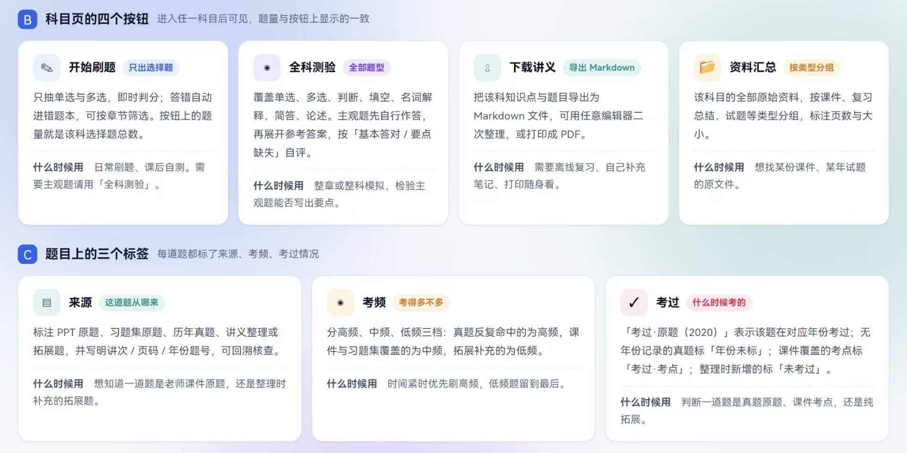
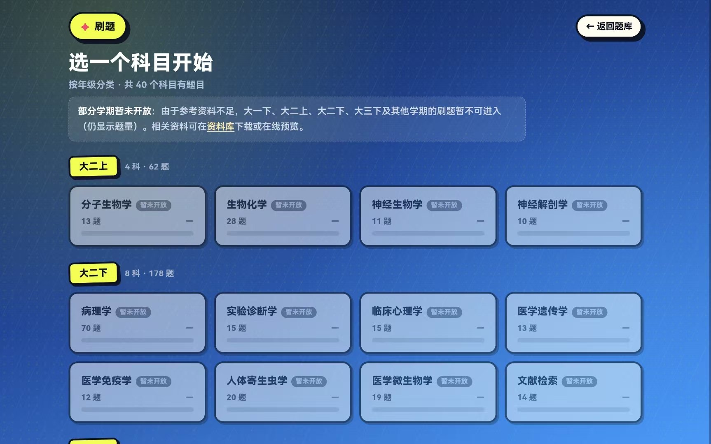
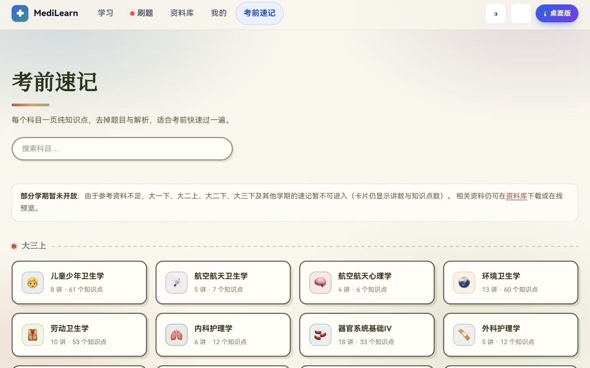
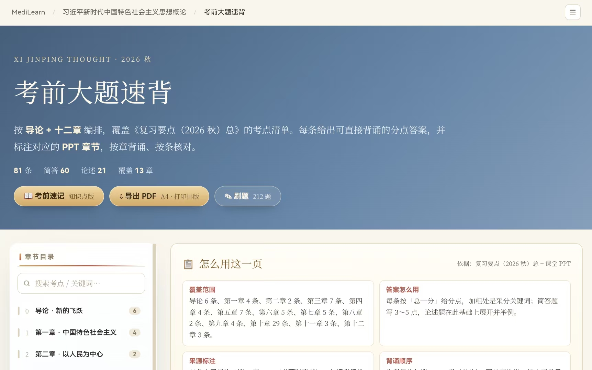
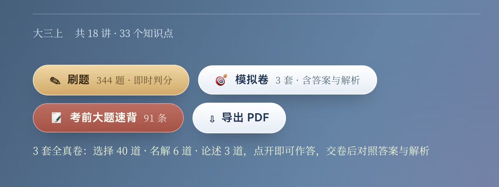
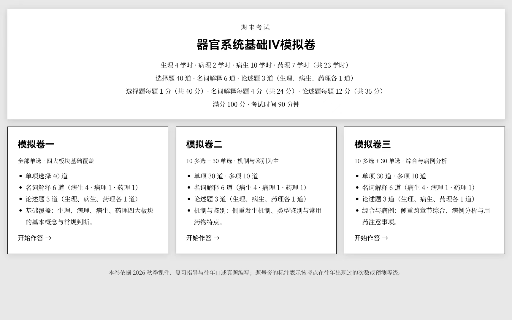
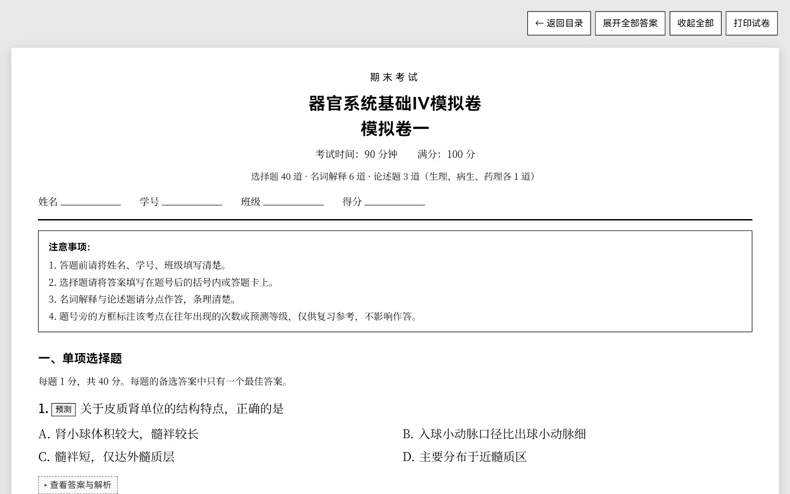

START HERE · 开始教程
这份教程按真实页面截图走一遍：五个入口分别管什么、科目页四个按钮怎么选、刷题和模拟卷怎么配合、考前怎么用速记和大题速背冲刺。看完照着点一遍就会了。
所有页面顶部都一样，五件事分开管，不用记路径。首页中间还有四个大按钮，是这五个入口的快捷方式——开始学习、点击刷题、我的错题本、考前速记，第一次来直接点「开始学习」就行。
| 入口 | 干什么 | 什么时候点 |
|---|---|---|
| 学习 | 科目 → 章节 → 知识点，表格、要点框、术语卡、配图都在这 | 系统过内容、查漏补缺 |
| 刷题 | 只出单选与多选，提交即判分并给解析 | 课后自测、碎片时间 |
| 资料库 | 课件 PDF、讲义、复习总结，可预览可下载 | 想对照老师原版课件 |
| 我的 | 错题本、学习进度、主题与设置 | 清理错题、看完成度 |
| 考前速记 | 每科一页纯知识点，去掉题目与解析 | 考前 1–2 天过一遍 |
进入任一科目，页面上有四个按钮，分别对应四种复习方式；按钮上写的题量就是实际题量。

刷题首页按年级分组列出所有科目，卡片上写着该科选择题总数和你的完成度。

进去之后：
顶部「考前速记」进去是科目列表，按学期分组，卡片上写着「几讲 · 几个知识点」。

点进任一科，页头有三个按钮：
正文按章节排列，每个知识点一段，重点句加粗，配图带出处。左侧目录会跟着滚动高亮，点一下直接跳。
只有整理过大题的科目才有这个按钮（目前习思想、器官系统基础IV）。进去是一页可打印的分点答案。

器官系统基础IV 另配三套模拟卷，题型配比、分值、时长都按期末规格来。新增


| 卷次 | 题型配比 | 适合什么时候做 |
|---|---|---|
| 模拟卷一 | 全部单选 40 道，覆盖四大板块 | 第一轮复习完，测基础概念 |
| 模拟卷二 | 单选 30 + 多选 10，侧重机制与鉴别 | 二轮复习，练易混点 |
| 模拟卷三 | 单选 30 + 多选 10，综合与病例分析 | 考前一周，限时整套做 |
每套卷都是「选择题 40 道 · 名词解释 6 道 · 论述题 3 道」，满分 100，考试时间 90 分钟。点开就是试卷版式：

每道题上方都有三个小标签，决定你「先做哪道」：
① 平时跟课：学习 → 看本章知识点 → 开始刷题 → 错题本当天清一遍。
② 章节自测：全科测验 → 主观题自己写要点 → 展开答案对照 → 缺的补进速记页。
③ 考前三天：考前速记过一遍 → 大题速背背分点 → 模拟卷限时做一套 → 错题本扫一遍。
目前只开放大三上。其他学期参考资料不足，学习功能暂时关闭；卡片仍显示科目简介与规模，资料可在资料库下载或在线预览。
站点有离线缓存。按 Ctrl + Shift + R 强制刷新；手机端在浏览器设置里清除站点数据后重开。
可以，页面自适应手机，底部有「首页 / 学习 / 刷题 / 资料」标签栏；速记页目录在正文上方，点开即可跳转。
错题本是独立会话：答题记录不写回主进度，刷新即重置，方便反复刷同一批题而不影响主页面。
它会唤起打印对话框，在「目标打印机」里选「另存为 PDF」再保存；手机上选「存储为 PDF」。